Na początek
Craty to ewidencja rzeczy: każdy przedmiot ma swoje miejsce, numer i naklejkę z kodem QR. Przykłady w tej instrukcji pochodzą z wymyślonej Pracowni Kowalskich: dwa magazyny (główny w hali i garaż), kilkanaście narzędzi i urządzeń, kilka osób i firm, które je pożyczają.
W pracowni pracują dwie osoby, a z maszyn korzystają też członkowie pracowni. To dobrze pokazuje trzy role w Craty:
| Rola | Kto w przykładzie | Co może |
|---|---|---|
| Administrator | Ewa Kowalska | Wszystko, także ustawienia aplikacji, użytkowników, moduły, pocztę i aktualizacje. |
| Magazynier | Tomek Wiśniewski | Całą codzienną pracę: przedmioty, wypożyczenia, serwis, materiały, sprzedaż, kategorie i strukturę magazynu. |
| Użytkownik | Ola Mazur | Tylko rezerwacje maszyn i swój profil (opis w rozdziale Rezerwacje maszyn). |
Kont nie zakłada się samemu: robi to administrator w Ustawienia → Użytkownicy. Logujesz się e-mailem i hasłem.

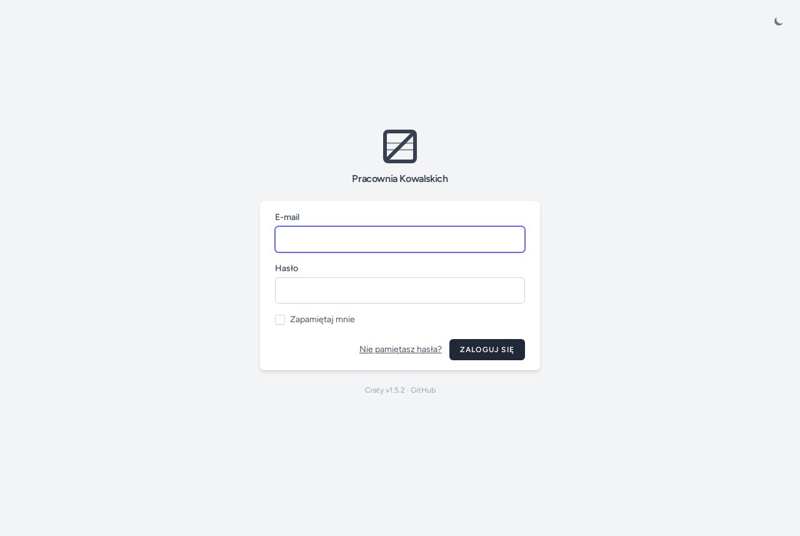
Menu
Na górze są zakładki: Panel i Przedmioty, a dalej te z włączonych modułów (Wypożyczenia, Maszyny, Sprzedaż, Kontakty, Materiały, Serwis). Po prawej: koszyk (publiczny pchli targ), przełącznik jasnego i ciemnego motywu oraz menu z Twoim imieniem, w którym są Ustawienia, Profil i wylogowanie. Na telefonie i w wąskim oknie zakładki zamieniają się w rząd ikon, a resztę znajdziesz pod przyciskiem z trzema kreskami.
Moduły Wypożyczenia, Sprzedaż, Kontakty, Serwis, Materiały eksploatacyjne i Rezerwacje maszyn można włączać i wyłączać w Ustawienia → Moduły. Wyłączony moduł znika z menu, ale jego dane zostają i wracają po ponownym włączeniu.
Panel
Panel to pierwsza strona po zalogowaniu. U góry są liczby: ile przedmiotów jest w magazynie, ile są warte razem, ile jest wypożyczonych i ile czeka na sprzedaż. Niżej Craty zbiera wszystko, czym trzeba się zająć:
- Przeterminowane wypożyczenia: co miało już wrócić i u kogo jest.
- Kończące się materiały: materiały, których jest na minimum albo mniej.
- Rezerwacje do wydania dziś i jutro.
- Serwis: wymaga uwagi: rzeczy w naprawie, przeglądy po terminie i zbliżające się, kończące się gwarancje.
- Dziś na maszynach: kto i w jakich godzinach korzysta dziś z maszyn (moduł Rezerwacje maszyn).
- Ostatnio dodane i Dodane z telefonu: te drugie to przedmioty dodane szybko ze skanera, które warto uzupełnić.

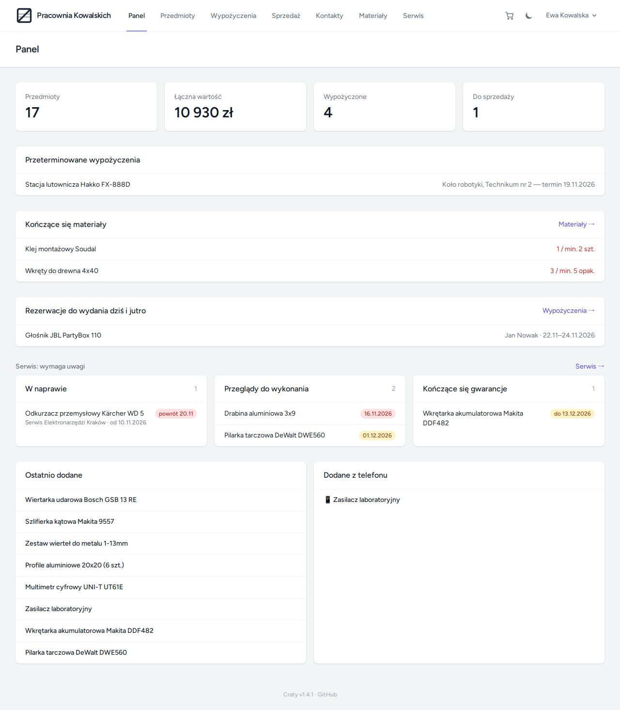
Każda pozycja na Panelu jest linkiem: kliknięcie prowadzi prosto do przedmiotu, materiału albo odpowiedniej zakładki.
Kategorie i miejsca
Zanim dodasz pierwsze przedmioty, warto ustalić dwie rzeczy: czym są (kategorie) i gdzie leżą (struktura magazynu). Obie są w Ustawienia, w części dostępnej także dla magazyniera.
Kategorie
Kategoria to rodzaj przedmiotu, np. „Elektronarzędzia” albo „Sprzęt AV”. Ma nazwę i krótki kod (np. ELN), od którego zaczyna się numer ewidencyjny. Kategoria może mieć nadrzędną: w przykładzie „Elektronarzędzia” i „Narzędzia pomiarowe” są podkategoriami „Narzędzi”.
Strona kategorii wygląda jak Struktura magazynu. Kategorie główne to karty, a ich podkategorie są w środku, na dowolną głębokość, i dają się zwijać. Liczba przy kategorii to jej przedmioty w magazynie (kliknięcie otwiera ich listę), a liczba w nawiasie obejmuje też podkategorie. Ołówek otwiera edycję, a przycisk + Podkategoria (albo mały „+” przy podkategorii) otwiera formularz z już wybraną kategorią nadrzędną.

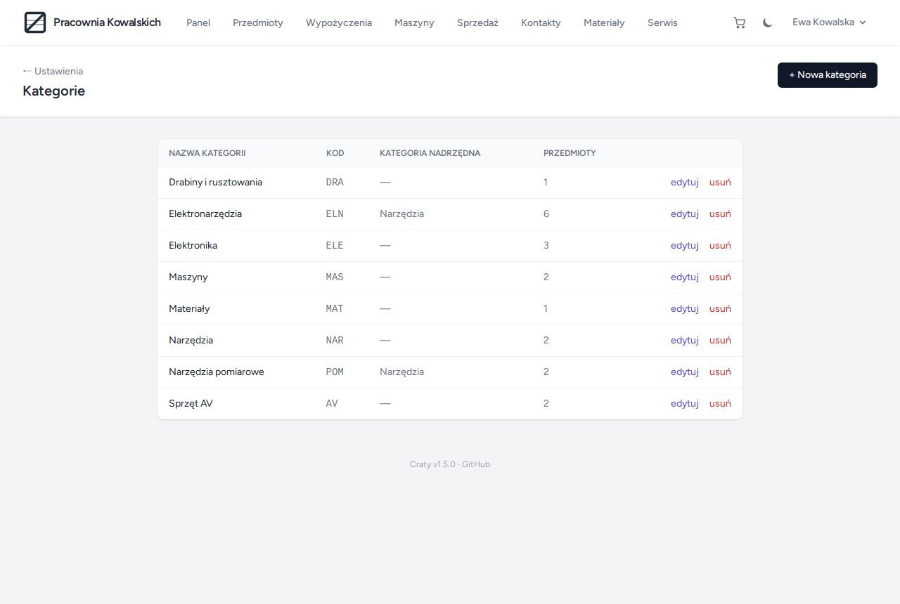
Kategorię usuwa się na dole formularza edycji, i tylko wtedy, gdy nie ma w niej przedmiotów ani podkategorii. Kategorii nie da się przenieść pod jej własną podkategorię.
Kody kategorii, magazynów i pomieszczeń mogą mieć tylko litery, cyfry, myślnik i podkreślnik, bo trafiają do numeru ewidencyjnego.
Struktura magazynu
Struktura magazynu to jedno drzewo „gdzie co leży”. Ma cztery poziomy, z których obowiązkowy jest tylko pierwszy:
- Magazyn: budynek, hala, garaż. Od razu po założeniu da się go wybrać przy przedmiocie jako „cały magazyn”. Jeśli masz jedno pomieszczenie i nie potrzebujesz więcej, na tym możesz skończyć.
- Pomieszczenie (opcjonalne): np. „Hala warsztatowa” i „Magazyn narzędzi” w jednym budynku.
- Regał → półka → pojemnik (opcjonalne): najdokładniejsze miejsca.

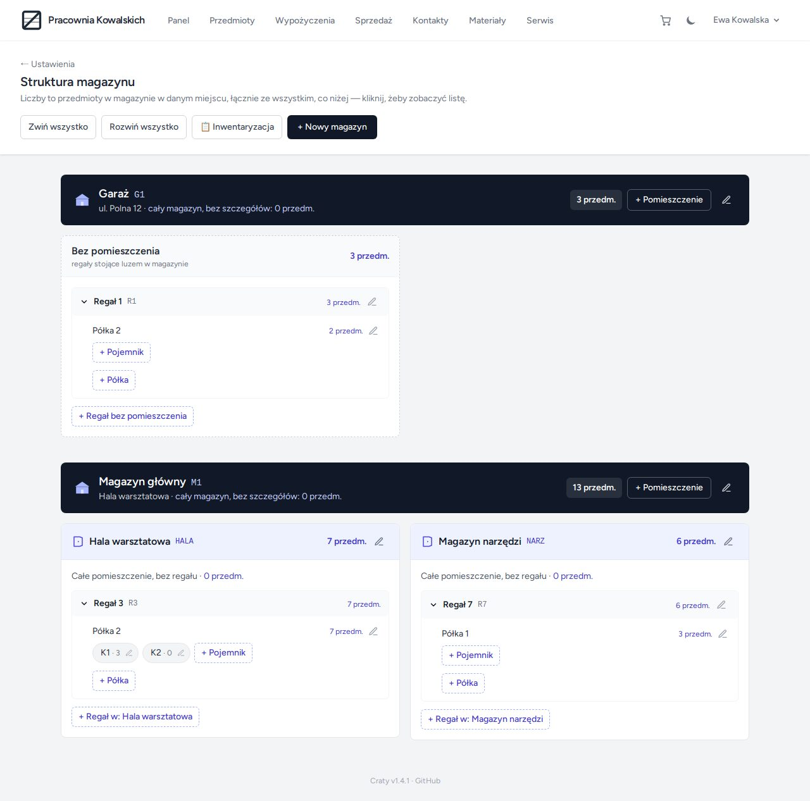
Ewa dodaje garaż z regałem i półką
- W Ustawienia → Struktura magazynu klika + Nowy magazyn, wpisuje nazwę „Garaż”, kod
G1i adres. Zapisuje. - Garaż nie ma pomieszczeń, więc regał dodaje od razu w nim: + Regał, numer „1”.
- Pod regałem klika + Półka. Formularz ma już wpisany magazyn i regał, zostaje numer półki: „2”.
- Od teraz przy przedmiocie da się wybrać miejsce „Garaż, regał 1, półka 2”. Projektor i głośnik trafiły właśnie tam.
Liczba przy każdym miejscu to przedmioty, które tam leżą (razem ze wszystkim niżej). Po najechaniu myszką widać ich nazwy, a kliknięcie otwiera listę przedmiotów z tego miejsca. Edycja i usuwanie są pod ołówkiem przy nazwie.
Usuwanie niczego nie gubi. Usunięcie pomieszczenia przenosi jego przedmioty do całego magazynu, a usunięcie regału, półki lub pojemnika przenosi je poziom wyżej. Każde przeniesienie widać w historii przedmiotu. Magazynu, w którym coś leży, nie da się usunąć.
Przedmioty
Dodawanie przedmiotu
W zakładce Przedmioty kliknij + Dodaj przedmiot. Wymagana jest tylko nazwa, ale im więcej wpiszesz, tym łatwiej będzie potem szukać.

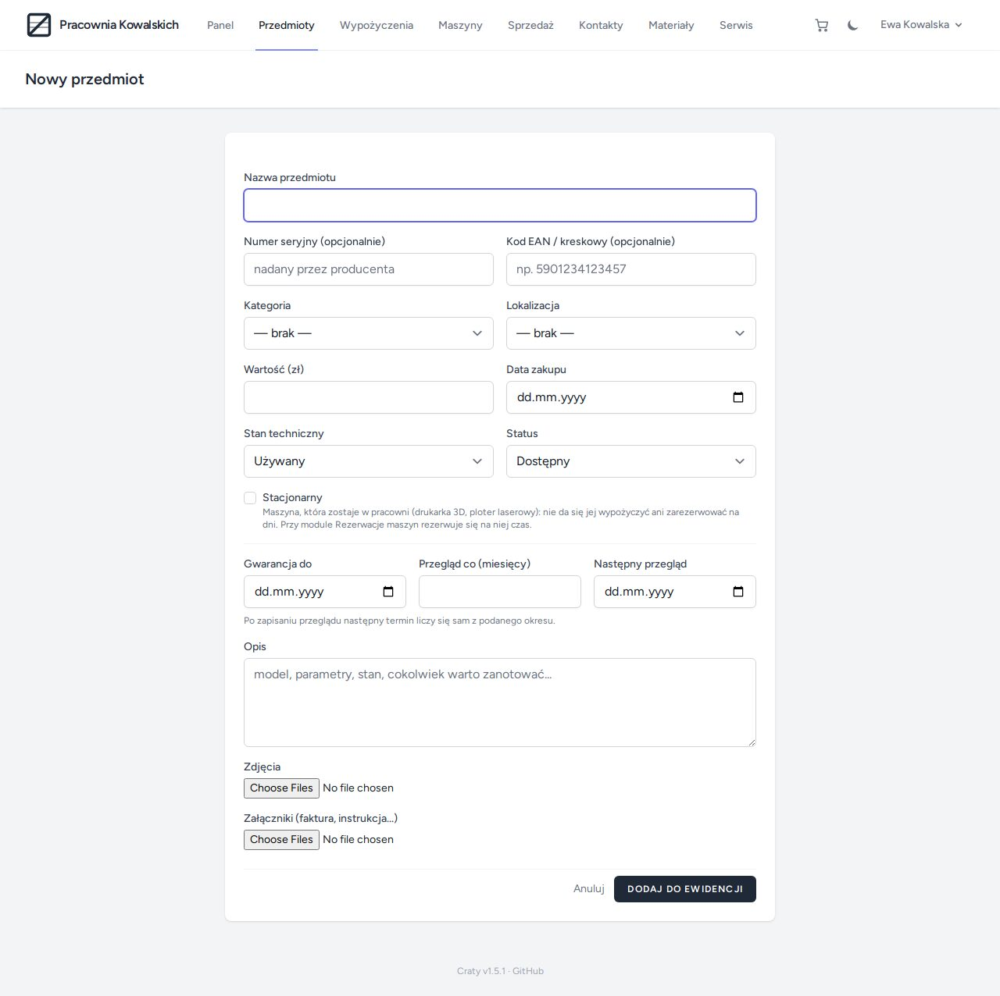
Nowa wkrętarka w hali
- Nazwa: „Wkrętarka akumulatorowa Makita DDF482”.
- Numer seryjny z tabliczki (
DDF482-7731902) i kod EAN z pudełka. Oba są opcjonalne, ale dzięki nim skaner znajdzie przedmiot po kodzie producenta. - Kategoria: Elektronarzędzia. Lokalizacja: Magazyn główny, hala, regał 3, półka 2.
- Wartość 450 zł, data zakupu, stan „Nowy”, status „Dostępny”.
- Gwarancja do: data z karty gwarancyjnej. W opisie: „18 V, 2 akumulatory 3 Ah, ładowarka, walizka”.
- Zdjęcia i załączniki, np. paragon w PDF i instrukcja obsługi. Zapisuje.
Numer ewidencyjny
Po zapisaniu Craty sam nadaje numer ewidencyjny i kod QR. Numer składa się z kodu kategorii, miejsca, roku i kolejnego numeru:
Przedmiot bez kategorii albo miejsca dostaje w numerze GEN lub BRAK. Gdy uzupełnisz te dane później, na karcie przedmiotu przy kodzie QR jest przycisk odświeżenia, który przelicza numer i kod na nowo.
Po odświeżeniu numeru stara, przyklejona naklejka przestaje pasować. Wydrukuj nową.
Karta przedmiotu
Kliknięcie przedmiotu otwiera jego kartę: dane, zdjęcia, kod QR, historia zmian, a po prawej ramki do pracy z przedmiotem: Wypożyczenie (z rezerwacjami), Serwis i Sprzedaż. Na górze są przyciski Drukuj etykietę i Edytuj.

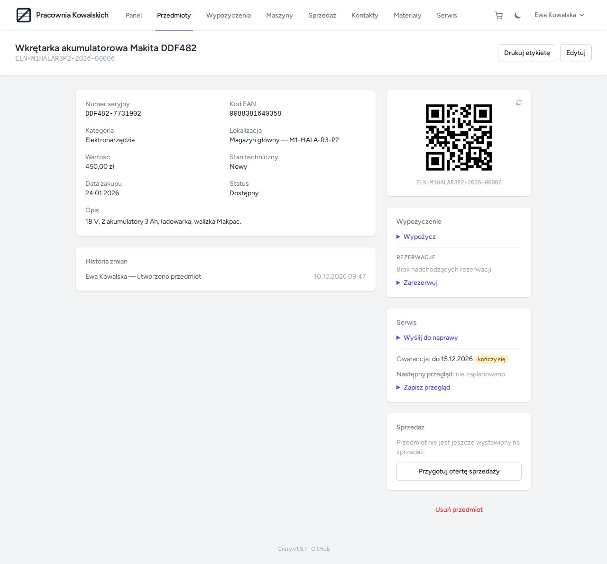
Historia zmian
Każda zmiana ważnych pól (nazwa, wartość, stan, status, kategoria, miejsce), każde wypożyczenie, zwrot i naprawa zapisuje się w historii przedmiotu, z tym, kto i kiedy to zrobił.

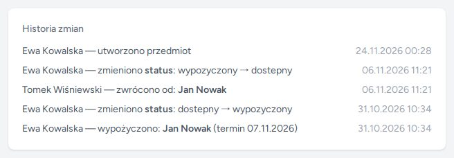
Sprzedane i wycofane
Przedmiot ze statusem „Sprzedany” albo „Wycofany” znika z listy przedmiotów i z liczb na Panelu, ale nie jest kasowany: jego karta, historia i kod QR dalej działają. Żeby go zobaczyć, wybierz ten status w filtrze listy.
Lista i wyszukiwanie
Zakładka Przedmioty ma dwa widoki, przełączane ikonami po prawej stronie filtrów: kafelki ze zdjęciami i lista w tabeli.

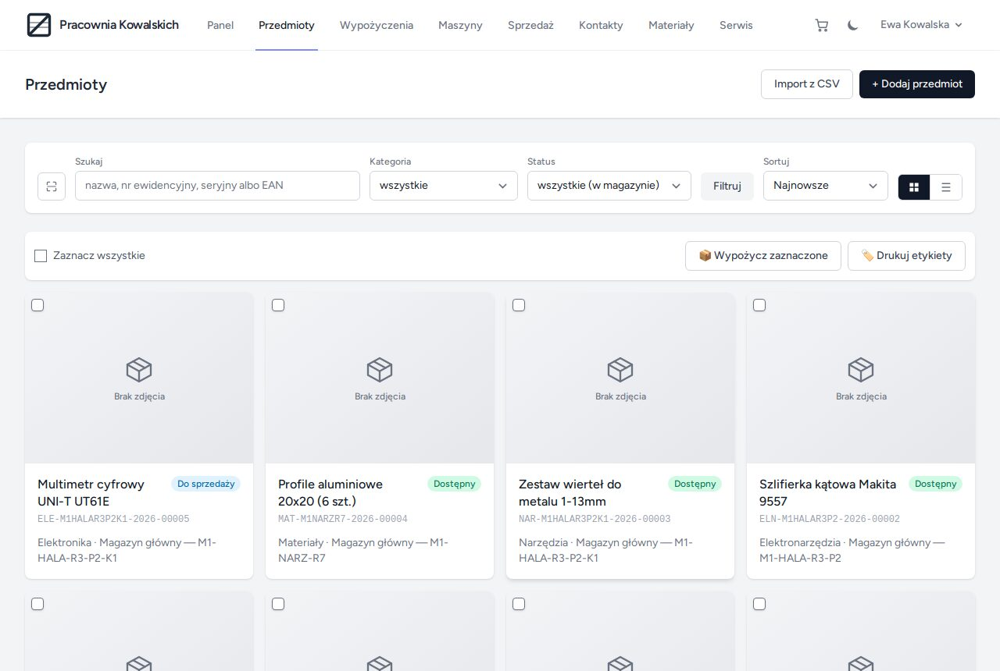

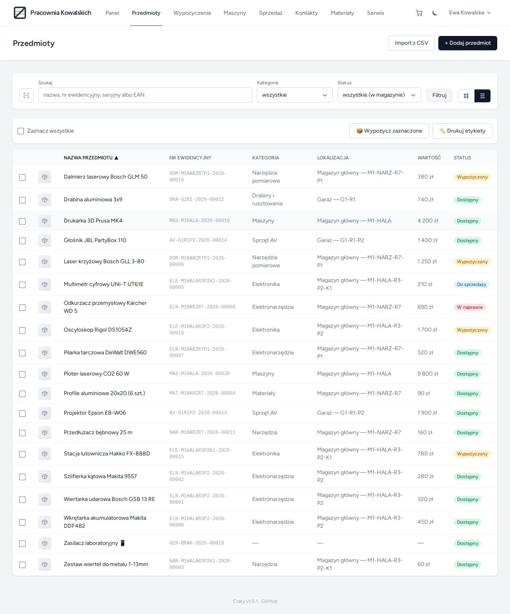
- Szukaj znajduje po nazwie, numerze ewidencyjnym, seryjnym i EAN. Ikona po lewej otwiera skaner.
- Kategoria i Status zawężają listę. Domyślny status to „wszystkie (w magazynie)”, czyli bez sprzedanych i wycofanych.
- Sortowanie: w liście kliknij nagłówek kolumny (drugie kliknięcie odwraca kolejność), w kafelkach wybierz z listy „Sortuj”.
Gdzie są wszystkie rzeczy Boscha?
- Tomek wpisuje „bosch” w pole Szukaj i klika Filtruj.
- Widzi wiertarkę, laser i dalmierz, z miejscem i statusem każdego z nich. Laser i dalmierz są wypożyczone.
- Nad listą pojawia się żółty pasek „Filtry są włączone i zostają zapamiętane, dopóki ich nie wyczyścisz”. Po powrocie na listę później Craty pokaże te same wyniki, aż Tomek kliknie Wyczyść filtry.

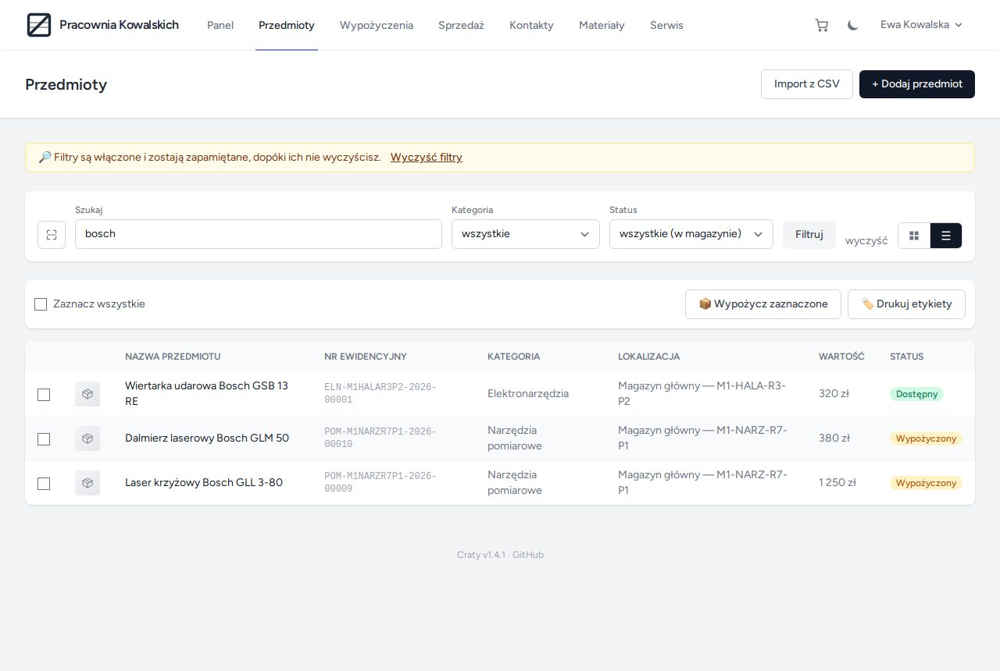
Lista pamięta ostatnie wyszukiwanie, filtry i sortowanie. Jeśli brakuje Ci jakiegoś przedmiotu, najpierw sprawdź, czy nad listą nie ma żółtego paska.
Checkboxy przy przedmiotach służą do dwóch rzeczy naraz dla wielu przedmiotów: Drukuj etykiety i Wypożycz zaznaczone (zestaw, opisany niżej). Z listy przedmiotów przefiltrowanej po miejscu można też zacząć inwentaryzację tego miejsca.
Wczytanie wielu przedmiotów naraz z arkusza, eksport listy i zmiana wielu przedmiotów jednym plikiem są opisane w rozdziale Import i eksport.
Etykiety z kodem QR
Kod QR na naklejce prowadzi prosto do karty przedmiotu: wystarczy zeskanować go telefonem. Etykietę drukujesz z karty przedmiotu (Drukuj etykietę) albo dla wielu przedmiotów naraz z listy (zaznacz i Drukuj etykiety).

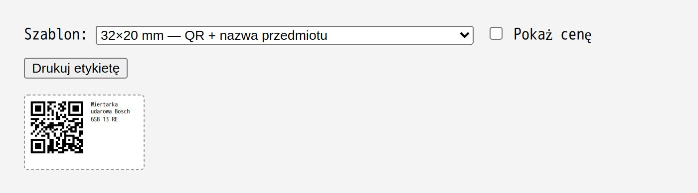
| Szablon | Co jest na naklejce |
|---|---|
| 32 × 20 mm | Kod QR i nazwa przedmiotu (domyślny). |
| 35 × 25 mm | Sam kod QR. |
| 50 × 30 mm | Kod QR, nazwa i numer ewidencyjny, większą czcionką. |
Każdy szablon może mieć dodatkowo cenę (z pola „Wartość”). Strona ustawia rozmiar papieru na rozmiar naklejki, więc w oknie drukowania wybierz drukarkę etykiet i nie zmieniaj marginesów. Na bardzo małej naklejce długa nazwa może się nie zmieścić w całości.
Wypożyczenia
Wypożyczenia to moduł, domyślnie włączony. Kto ich nie potrzebuje, wyłącza je w Ustawienia → Moduły: znikają wtedy wypożyczenia, zestawy, rezerwacje na dni, protokoły i przypomnienia o przeterminowanych. Zapisane wypożyczenia zostają i wracają po ponownym włączeniu.
Wypożyczenie zapisujesz na karcie przedmiotu, w ramce Wypożyczenie. Craty zapamiętuje, komu i do kiedy, kto z obsługi wydał przedmiot i w jakim był stanie, a do wydrukowania przygotowuje protokół.
Ewa pożycza wkrętarkę Janowi Nowakowi na tydzień
- Na karcie wkrętarki klika Wypożycz, żeby rozwinąć formularz.
- W polu „Komu wypożyczono” wybiera Jana Nowaka z kontaktów. Nowej osoby nie trzeba najpierw dodawać: opcja „+ Nowy kontakt” pozwala wpisać nazwę, telefon i e-mail od razu tutaj.
- Termin zwrotu: za tydzień. Uwagi: „Z ładowarką i dwoma akumulatorami.” (drukują się na protokole).
- Klika Wypożycz. Wkrętarka ma teraz status „Wypożyczony”.

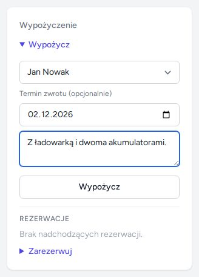

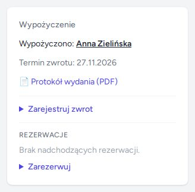
Protokół wydania
Przy wypożyczonym przedmiocie jest link Protokół wydania (PDF). To dokument do wydrukowania i podpisania przez obie strony: dane wypożyczającego (z kontaktu: telefon, e-mail, adres), przedmiot z numerami, wartością i stanem, daty i uwagi. Protokoły powstają na bieżąco z danych w Craty, nie trzeba ich nigdzie zapisywać.
Zwrot
Anna Zielińska oddaje oscyloskop
- Tomek otwiera kartę oscyloskopu (najszybciej skanując naklejkę) i klika Zarejestruj zwrot.
- Stan przy zwrocie: zostawia „Używany”. Gdyby coś było uszkodzone, wybrałby „Uszkodzony” i stan zmieniłby się też w kartotece.
- Uwagi: „Bez uwag, komplet z sondami.” Zatwierdza Zarejestruj zwrot.

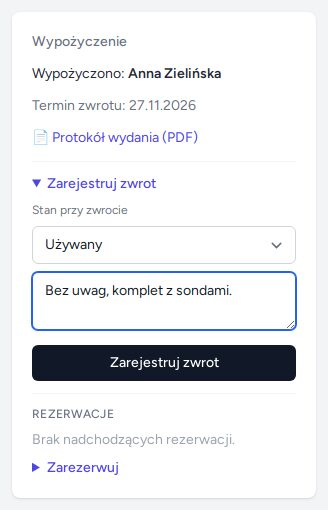

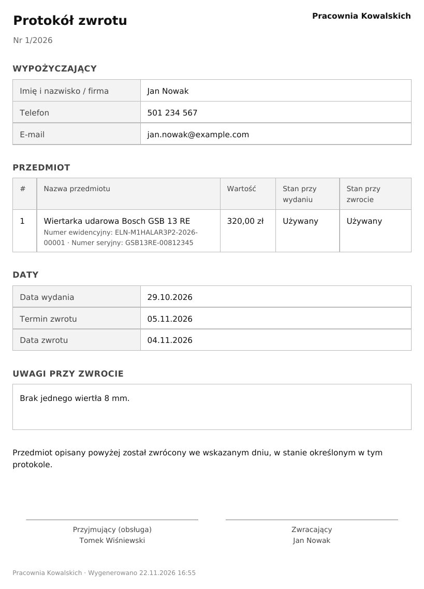
Pod formularzem na karcie przedmiotu są ostatnie zakończone wypożyczenia z linkami do obu protokołów.
Zakładka Wypożyczenia
Zakładka Wypożyczenia zbiera wszystko w jednym miejscu: co jest teraz wypożyczone (po terminie na czerwono), wypożyczone zestawy i nadchodzące rezerwacje. Stąd też zaczniesz nowy zestaw przyciskiem Wypożycz zestaw.

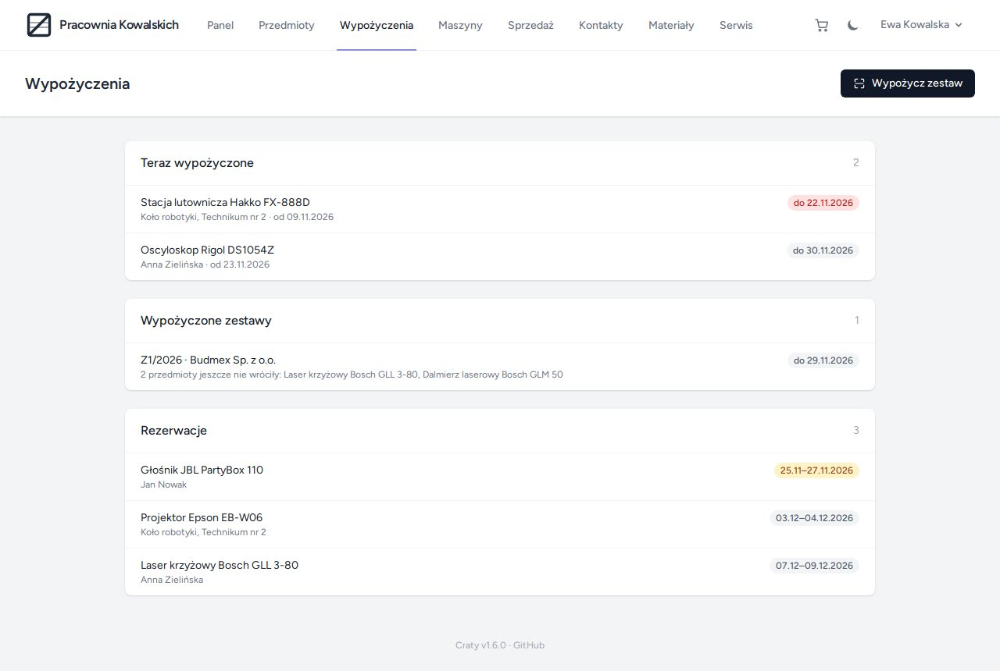
Przeterminowane wypożyczenia widać też na Panelu. Administrator może dodatkowo włączyć codzienny e-mail z ich listą (Ustawienia → Powiadomienia).
Zestawy
Gdy jedna osoba bierze kilka rzeczy naraz, wypożycz je jako zestaw: jeden formularz, jedna osoba, jeden wspólny protokół z listą wszystkich przedmiotów. Przedmioty do zestawu wybierasz na dwa sposoby:
- Z listy przedmiotów: zaznacz checkboxy i kliknij Wypożycz zaznaczone.
- Skanując serię: na stronie Skanuj serię skanujesz naklejki po kolei i klikasz Wypożycz jako zestaw (opis w rozdziale Telefon i skaner).

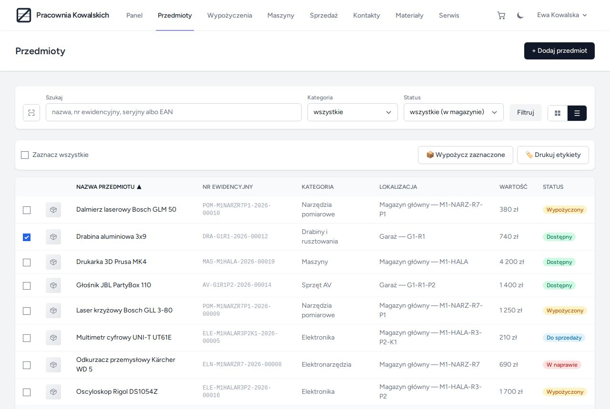
Ekipa Budmexu bierze sprzęt pomiarowy na remont
- Ewa zaznacza na liście laser krzyżowy, dalmierz i przedłużacz bębnowy, potem Wypożycz zaznaczone.
- Na stronie zestawu widzi trzy przedmioty. Gdyby któryś był wypożyczony albo w naprawie, byłby oznaczony na czerwono i zestaw by nie przeszedł.
- Komu: Budmex Sp. z o.o. Termin zwrotu za dziesięć dni. Uwagi: „Wykończenie mieszkania przy ul. Lipowej.”
- Wypożycz zestaw. Zestaw dostaje numer Z1/2026, a każdy przedmiot status „Wypożyczony”.
- Drukuje Protokół wydania (PDF) ze strony zestawu i daje go brygadziście do podpisu.

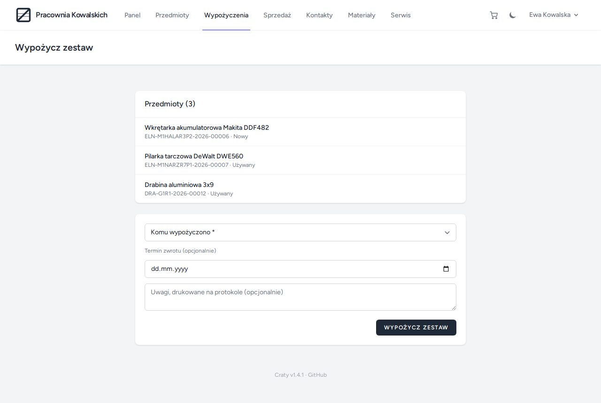

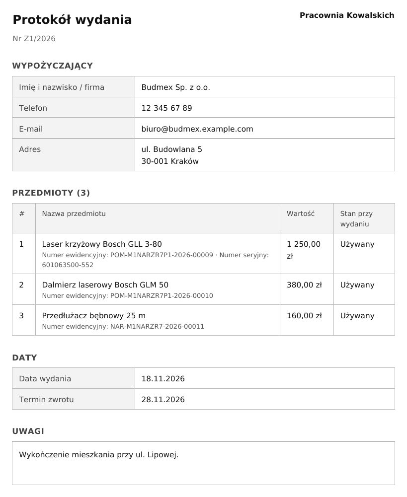
Zwrot całości albo części
Na stronie zestawu każdy przedmiot ma swój checkbox, stan przy zwrocie i uwagi. Zaznaczasz to, co wróciło, i klikasz Zarejestruj zwrot. Resztę zwrócisz później tutaj albo zwykłym zwrotem z karty przedmiotu. Protokół zwrotu zestawu obejmuje to, co już wróciło.

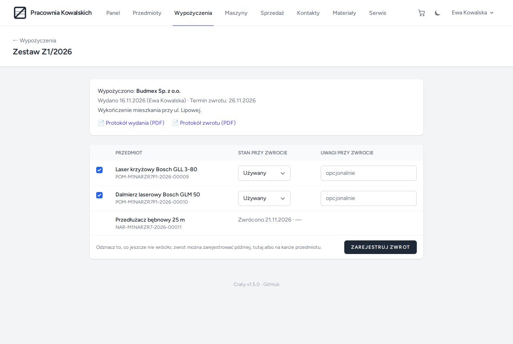
Na karcie przedmiotu z zestawu widać numer zestawu z linkiem, a protokoły prowadzą do wspólnego protokołu zestawu.
Rezerwacje
Rezerwacja „zaklepuje” przedmiot dla kogoś na konkretne dni. Dodajesz ją na karcie przedmiotu, w ramce Wypożyczenie, w części Rezerwacje.
Głośnik dla Jana na urodziny, potem dla Anny na festyn
- Jan Nowak zarezerwował głośnik od dziś do pojutrza. Na karcie głośnika jest żółta informacja „Zarezerwowane dla Jan Nowak”.
- Gdy Jan przychodzi, Ewa klika Wydaj teraz: rezerwacja zamienia się w wypożyczenie dla Jana, z terminem zwrotu w ostatnim dniu rezerwacji.
- Anna dzwoni, że potrzebuje głośnika w przyszłym tygodniu. Ewa klika Zarezerwuj, wybiera Annę, daty i dopisuje „Na festyn w szkole.”

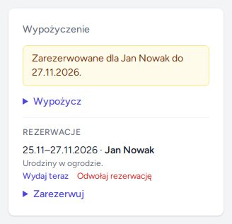

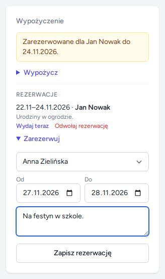
- Dwie rezerwacje tego samego przedmiotu na zachodzące na siebie dni nie przejdą: Craty pokaże, kto już ma ten termin.
- Zarezerwowany przedmiot da się wypożyczyć komuś innemu, Craty tylko ostrzega. Decyzja należy do obsługi.
- Rezerwacje na dziś i jutro widać na Panelu, a wszystkie nadchodzące w zakładce Wypożyczenia.
Rezerwacje maszyn
Niektóre rzeczy nigdy nie wychodzą z pracowni: drukarka 3D, ploter laserowy, stanowisko lutownicze. Ich się nie wypożycza, tylko rezerwuje na nich czas. Tak działa na przykład makerspace, gdzie członkowie zapisują się na maszyny pod swoje projekty, a inni widzą, kiedy maszyna jest zajęta.
Przedmiot stacjonarny
W formularzu przedmiotu (Edytuj) zaznacz pole Stacjonarny. Takiego przedmiotu nie da się wypożyczyć, zarezerwować na dni ani dodać do zestawu. Na jego karcie przy statusie widać dopisek „stacjonarny”, a zamiast formularza wypożyczenia informację, że zostaje w pracowni.

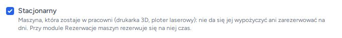
Właściciel albo opiekun
W makerspace maszyna często należy do jednego z członków albo ktoś się nią opiekuje: zna ją, szkoli innych i wie, kiedy trzeba ją wyczyścić. W formularzu przedmiotu wybierz tę osobę w polu Osoba odpowiedzialna i ustaw jej rolę: Opiekun albo Właściciel. Osobę wybiera się z Kontaktów, więc najpierw musi tam być (link Dodaj kontakt jest pod polem). Pole działa przy każdym przedmiocie, nie tylko przy maszynach.

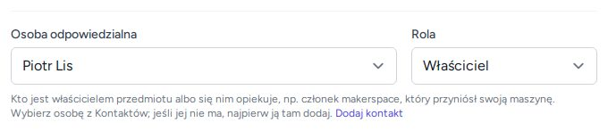
- Na karcie przedmiotu widać np. „Właściciel: Piotr Lis” z klikalnym telefonem i e-mailem.
- W grafiku maszyn pod nazwą maszyny jest „Opiekun: Kasia Wójcik”, więc członkowie z rolą Użytkownik wiedzą, kogo pytać.
- Na karcie kontaktu jest lista przedmiotów, których ta osoba jest właścicielem albo opiekunem.
- Zmiana osoby trafia do historii przedmiotu.
Grafik maszyn
Rezerwacje czasu to moduł Rezerwacje maszyn, domyślnie wyłączony. Po włączeniu w Ustawienia → Moduły w menu pojawia się zakładka Maszyny z grafikiem tygodnia. Wiersze to maszyny (wszystkie przedmioty stacjonarne), kolumny to dni, a każda rezerwacja ma godziny, osobę i kolor rodzaju użycia:
| Rodzaj | Kiedy |
|---|---|
| Użytek prywatny | Własny projekt, np. obudowa do czujnika. |
| Zajęcia | Lekcje, koło zainteresowań, zajęcia dla grupy. |
| Warsztaty | Jednorazowe warsztaty, np. grawerowanie dla seniorów. |
| Konserwacja | Maszyna wyłączona z użycia na czas przeglądu albo czyszczenia. Wybiera ją tylko obsługa. |

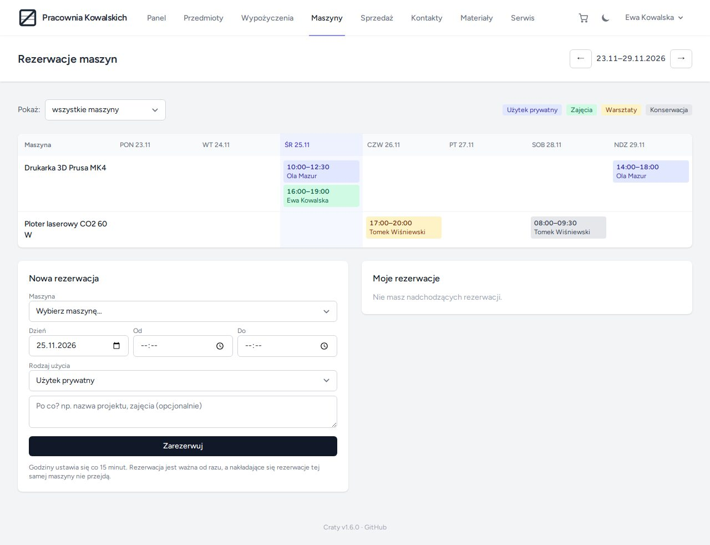
Strzałki przy datach przełączają tygodnie, a lista Pokaż zawęża grafik do jednej maszyny. Kliknięcie rezerwacji pokazuje jej opis i, jeśli wolno, przycisk odwołania.
Ewa rezerwuje drukarkę na zajęcia koła robotyki
- W zakładce Maszyny widzi, że rano drukarkę ma Ola, ale po południu jest wolna.
- W formularzu Nowa rezerwacja wybiera „Drukarka 3D Prusa MK4”, dzisiejszy dzień i godziny 16:00–19:00 (godziny ustawia się co 15 minut).
- Rodzaj: „Zajęcia”, opis: „Koło robotyki: modelowanie 3D”. Klika Zarezerwuj.
- Rezerwacja jest ważna od razu i od tej chwili wszyscy widzą ją w grafiku. Gdyby godziny nachodziły na cudzą rezerwację, Craty by ją odrzucił i napisał, kto ma już ten termin.
Rezerwacja z karty maszyny
Na karcie przedmiotu stacjonarnego jest ramka Rezerwacje maszyny: najbliższe rezerwacje, link do grafiku tej maszyny i formularz Zarezerwuj czas.

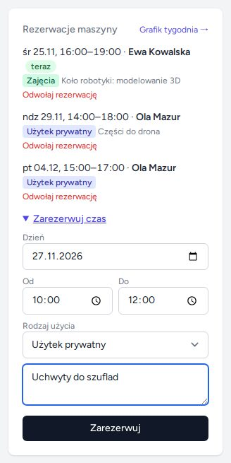
Rola Użytkownik
Osoby, które tylko korzystają z maszyn, nie potrzebują dostępu do magazynu. Administrator zakłada im konto z rolą Użytkownik w Ustawienia → Użytkownicy. Użytkownik po zalogowaniu trafia od razu do grafiku maszyn: rezerwuje, widzi, kto i kiedy zajął maszyny, i odwołuje swoje rezerwacje. Magazynu, wypożyczeń, kontaktów ani ustawień nie widzi wcale.

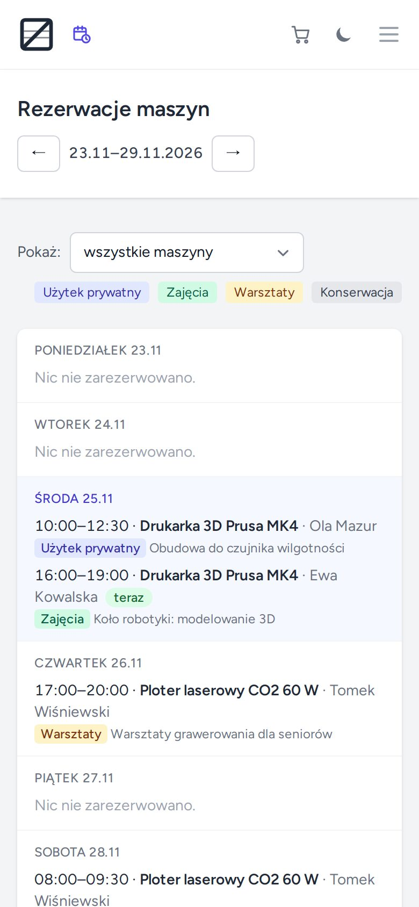
- Użytkownik odwołuje tylko swoje rezerwacje, które jeszcze się nie skończyły. Obsługa może odwołać każdą.
- Na Panelu obsługi lista Dziś na maszynach pokazuje, kto dziś korzysta z maszyn.
- Gdy moduł jest wyłączony, Użytkownik po zalogowaniu zobaczy tylko informację, że rezerwacje są chwilowo niedostępne.
Rezerwacje są godzinowe, więc serwer powinien mieć ustawioną polską strefę czasową (APP_TIMEZONE=Europe/Warsaw w pliku .env). Inaczej „dziś” i „teraz” mogą być przesunięte o godzinę.
Telefon i skaner
Craty jako aplikacja na telefonie
Craty działa w przeglądarce telefonu, ale można go też zainstalować jak aplikację: w Chrome na Androidzie wybierz z menu „Zainstaluj aplikację” (albo „Dodaj do ekranu głównego”), w Safari na iPhonie „Udostępnij → Do ekranu początkowego”. Aplikacja otwiera się od razu na Panelu. Instalacja i aparat wymagają adresu z HTTPS.

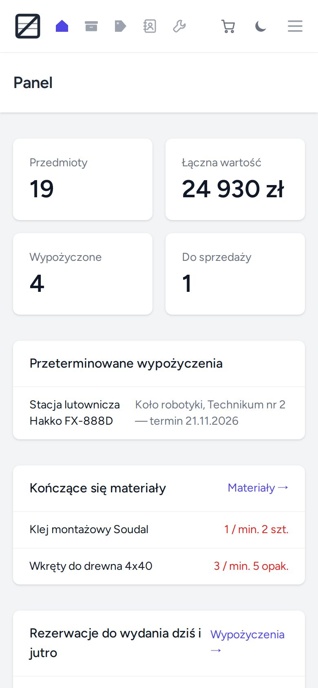

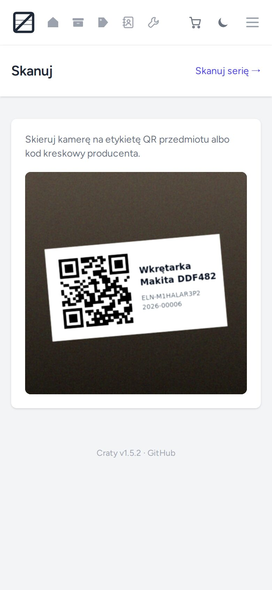
Skanowanie
Strona Skanuj (ikona przy polu wyszukiwania na liście przedmiotów) używa aparatu. Rozpoznaje dwa rodzaje kodów:
- Kod QR z naklejki Craty: od razu otwiera kartę przedmiotu.
- Kod kreskowy producenta (EAN, UPC i inne): Craty szuka przedmiotu z takim numerem EAN albo seryjnym. Jeśli go nie ma, proponuje szybkie dodanie.
Szybkie dodanie

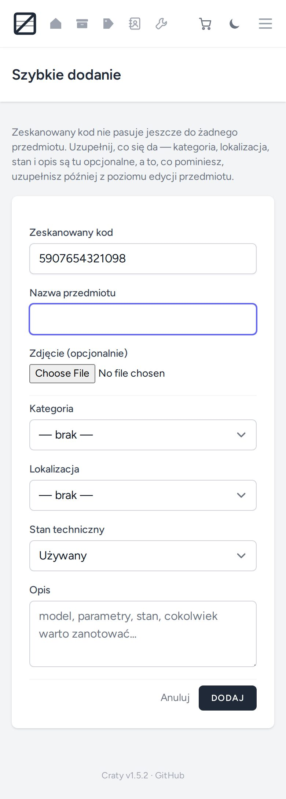
Tomek dodaje zasilacz prosto z półki
- Skanuje kod kreskowy na obudowie zasilacza. Craty go nie zna, więc otwiera szybkie dodanie z wpisanym kodem.
- Wpisuje nazwę „Zasilacz laboratoryjny” i robi zdjęcie aparatem. Kategorię i miejsce może pominąć, gdy się spieszy.
- Na liście przedmiotów zasilacz ma ikonkę 📱, a na Panelu jest w „Dodane z telefonu”. Ikonka znika, gdy ktoś otworzy pełną edycję i zapisze przedmiot.
Skanuj serię
Skanuj serię (link na stronie Skanuj) nie otwiera karty po pierwszym kodzie, tylko zbiera kolejne przedmioty na liście. Kod można też wpisać ręcznie albo użyć ręcznego czytnika kodów kreskowych podłączonego jak klawiatura. Z gotowej listy wypożyczasz wszystko jako zestaw albo drukujesz etykiety. Lista zostaje po odświeżeniu strony, a przycisk × usuwa pojedynczą pozycję.

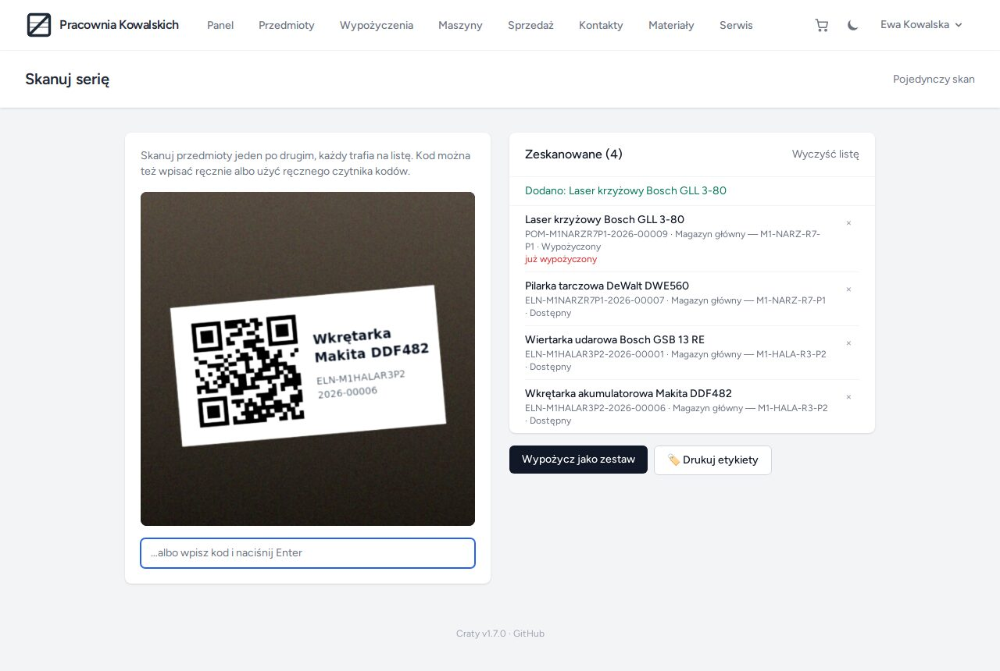
Inwentaryzacja
Inwentaryzacja sprawdza, czy w danym miejscu leży to, co powinno. Wybierasz miejsce, skanujesz to, co faktycznie tam jest, a Craty porównuje to z kartoteką. Zaczynasz z Ustawienia → Struktura magazynu → Inwentaryzacja albo z listy przedmiotów przefiltrowanej po miejscu (Inwentaryzacja tego miejsca).

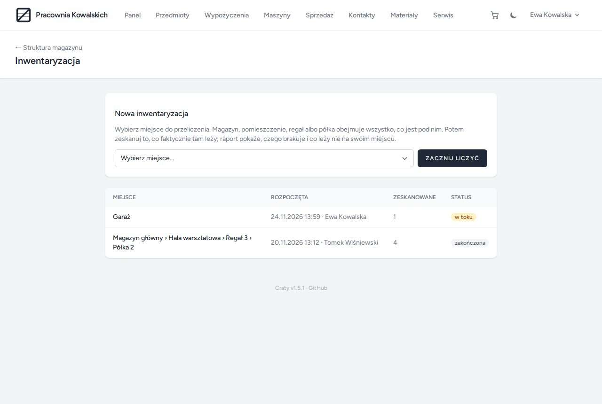
Magazyn, pomieszczenie, regał albo półka obejmuje wszystko, co jest pod nim. Każdy skan zapisuje się od razu, więc można przerwać i dokończyć później, także na innym telefonie.

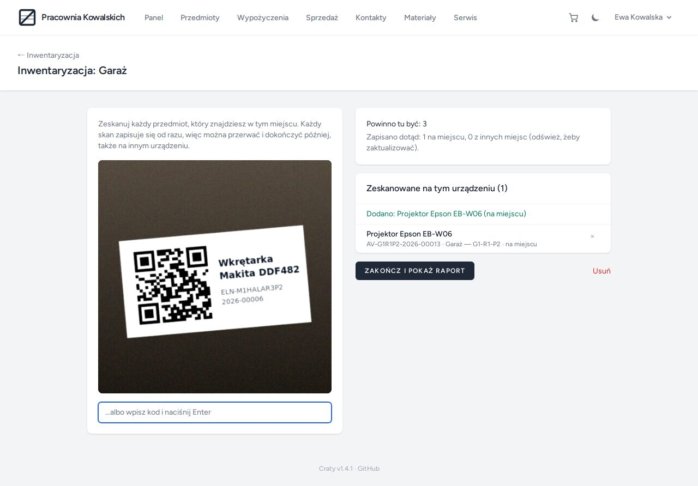
Tomek liczy półkę 2 na regale 3 w hali
- Wybiera miejsce „Magazyn główny › Hala warsztatowa › Regał 3 › Półka 2” i klika Zacznij liczyć.
- Skanuje wszystko, co leży na półce: wiertarkę, zestaw wierteł, multimetr i profile aluminiowe.
- Klika Zakończ i pokaż raport.

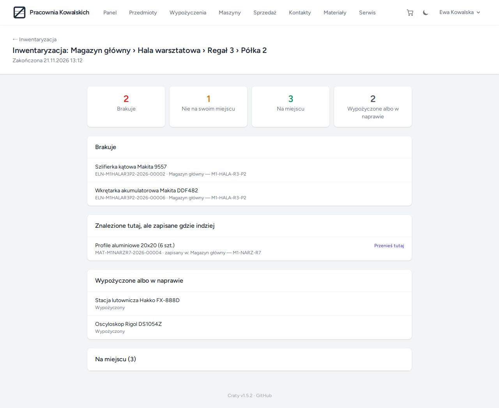
Raport ma cztery części:
- Brakuje: według kartoteki powinny tu być, a nie zostały zeskanowane. Tu: szlifierka i wkrętarka. Craty niczego z nimi sam nie robi, to lista do sprawdzenia.
- Znalezione tutaj, ale zapisane gdzie indziej: profile aluminiowe są zapisane na regale 7. Przycisk Przenieś tutaj poprawia miejsce w kartotece (zmiana trafia do historii).
- Wypożyczone albo w naprawie: rzeczy z tego miejsca, które są teraz poza magazynem, więc nie liczą się jako braki.
- Na miejscu: wszystko, co się zgadza.
Raporty zostają na liście inwentaryzacji. Sprzedane i wycofane przedmioty nie są brane pod uwagę.
Kontakty
Zakładka Kontakty (moduł, domyślnie włączony) to lista osób, firm i serwisów, z którymi pracujesz. Kontakt ma nazwę, typ (osoba, firma, serwis), telefon, e-mail, adres i notatkę. Telefon, e-mail i adres drukują się na protokołach.

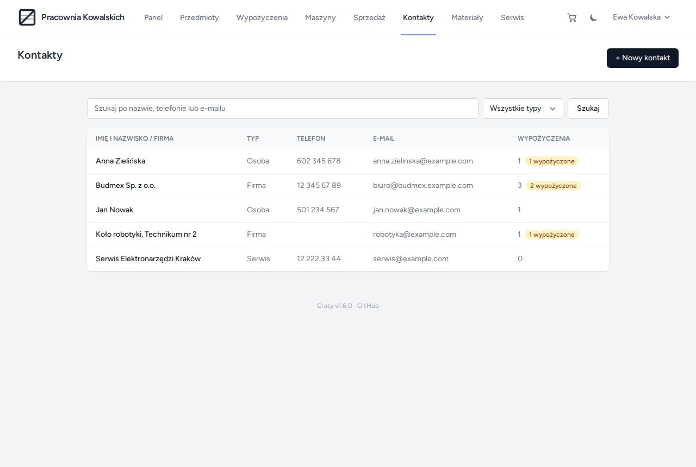
Listę przeszukasz po nazwie, telefonie i e-mailu oraz zawęzisz do jednego typu. Karta kontaktu pokazuje całą historię jego wypożyczeń (co, kiedy, czy wróciło, z protokołami), a przy serwisie także zlecone mu naprawy.

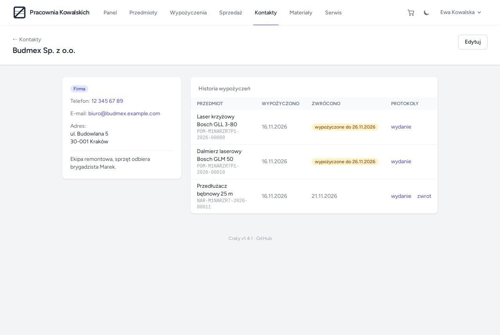
- Nowy kontakt dodasz tutaj (+ Nowy kontakt) albo w biegu, przy wypożyczeniu.
- Usunięcie kontaktu nie kasuje jego wypożyczeń: zostają w historii pod tą samą nazwą.
- Kontakt może być właścicielem albo opiekunem przedmiotów (opisane w rozdziale Rezerwacje maszyn). Jego karta pokazuje wtedy listę tych przedmiotów.
- Po wyłączeniu modułu pole „komu” przy wypożyczeniu jest zwykłym tekstem. Protokoły działają tak samo.
Serwis
Moduł Serwis (domyślnie wyłączony, włączasz go w Ustawienia → Moduły) pilnuje napraw, przeglądów okresowych i gwarancji. Dochodzi wtedy zakładka Serwis, ramka Serwis na karcie przedmiotu i pola w formularzu przedmiotu.

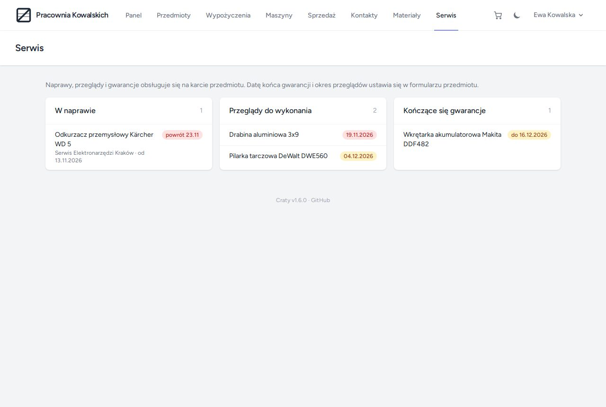
Naprawy
Odkurzacz jedzie do serwisu
- Na karcie odkurzacza Ewa klika Wyślij do naprawy.
- Wybiera „Serwis Elektronarzędzi Kraków” z kontaktów (serwisy są na górze listy). Przy naprawie we własnym warsztacie zostawiłaby to pole puste.
- Opis usterki: „Słabe ssanie, głośna praca silnika.”, data wysłania i planowany powrót za dziesięć dni.
- Odkurzacz ma status „W naprawie” i w tym czasie nie da się go wypożyczyć. Gdy minie planowany powrót, na Panelu i w Serwisie pojawia się czerwona data.
- Kiedy wróci: Zakończ naprawę, z datą powrotu, kosztem, opisem tego, co zrobiono, i stanem po naprawie. Odkurzacz wraca do statusu sprzed naprawy.

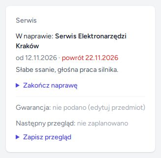
Wypożyczonego przedmiotu nie da się wysłać do naprawy: najpierw trzeba zarejestrować zwrot.
Przeglądy okresowe
W formularzu przedmiotu ustawiasz „Przegląd co (miesięcy)” i datę następnego przeglądu, np. dla drabin, gaśnic albo elektronarzędzi. Wykonany przegląd zapisujesz na karcie przedmiotu, a następny termin Craty liczy sam.
Coroczny przegląd drabiny
- Drabina ma przegląd co 12 miesięcy i jest już po terminie, więc świeci na czerwono na Panelu.
- Po sprawdzeniu Tomek klika na jej karcie Zapisz przegląd: data dzisiejsza, wynik „Pozytywny”, uwagi „Stopki wymienione, zawiasy nasmarowane.”
- Następny przegląd ustawia się sam za rok, a wpis trafia do historii serwisowej.

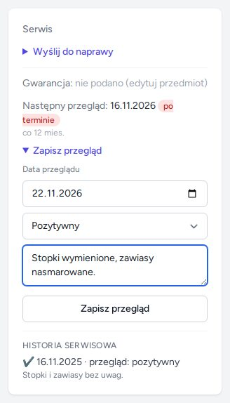
Gwarancje
W formularzu przedmiotu jest pole „Gwarancja do”. Na karcie przedmiotu i w Serwisie widać, gdy gwarancja kończy się w ciągu 30 dni albo już wygasła (przez 30 dni po końcu). Jak wkrętarka w przykładzie: to dobry moment, żeby sprawdzić, czy wszystko działa, póki można ją jeszcze reklamować.
Przypomnienie e-mailem
W Ustawienia → Powiadomienia administrator może włączyć cotygodniowe przypomnienie: w każdy poniedziałek rano e-mail z przeglądami po terminie i na najbliższe 14 dni, kończącymi się gwarancjami i naprawami po terminie. Przychodzi tylko wtedy, gdy coś jest na liście.
Materiały eksploatacyjne
Moduł Materiały (domyślnie wyłączony) to osobna lista na rzeczy liczone ilością: wkręty, taśmę, kabel, klej. Materiały nie mają numerów ewidencyjnych ani wypożyczeń, za to mają jednostkę (szt., opak., m, l, kg), miejsce i stan minimalny.

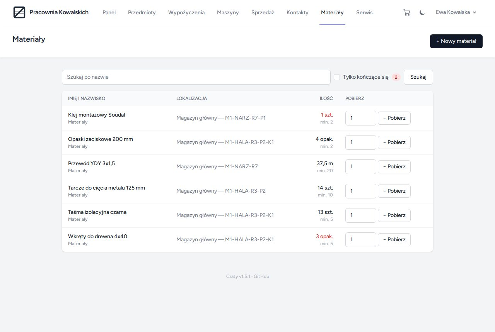
Ilość zmienia się tylko na trzy sposoby, a każda zmiana trafia do historii z datą, osobą i uwagą:
- Pobierz: zużycie, także szybko z samej listy (pole z ilością i przycisk obok).
- Uzupełnij: zakup albo dostawa.
- Ustaw policzony stan: po przeliczeniu na półce, zapisuje się jako korekta.
Kończą się wkręty
- Tomek pobiera z listy 2 opakowania wkrętów 4x40. Zostają 3, a minimum to 5, więc wkręty robią się czerwone i pojawiają się na Panelu w „Kończące się materiały”.
- Ewa kupuje 10 opakowań i na karcie materiału wpisuje je w Uzupełnij z uwagą „Zakup w hurtowni”.
- Przy porządkach okazuje się, że jest o jedno opakowanie mniej, niż pokazuje Craty. Ustaw policzony stan poprawia ilość i zapisuje korektę w historii.

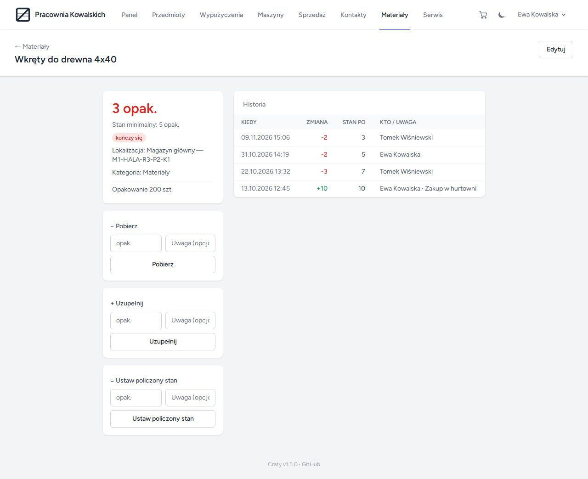
Edycja materiału zmienia tylko jego dane (nazwę, jednostkę, minimum, miejsce), nigdy ilość. Ilość nie spada poniżej zera. Filtr Tylko kończące się pokazuje wszystko, co trzeba dokupić.
Sprzedaż i pchli targ
Moduł Sprzedaż (domyślnie włączony) pomaga sprzedać niepotrzebny sprzęt. Craty nie jest sklepem: nie ma koszyka ani płatności. Przygotowujesz ofertę, wystawiasz ją na OLX, Allegro czy Vinted albo pokazujesz na własnym pchlim targu, a kupujący kontaktuje się z Tobą mailem lub telefonicznie.
Oferty
- Na karcie przedmiotu kliknij Przygotuj ofertę sprzedaży: tytuł, opis, cena i opcjonalnie link do tej samej oferty na OLX, Allegro albo Vinted.
- Oferta trafia do zakładki Przygotowane. Stąd możesz ją wystawić ręcznie albo wyeksportować do CSV (gotowe tytuły i opisy do wykorzystania gdzie chcesz).
- Wystawione oferty są w zakładce Wystawione, gdzie oznaczasz je jako sprzedane (przedmiot dostaje status „Sprzedany”) albo wycofujesz.

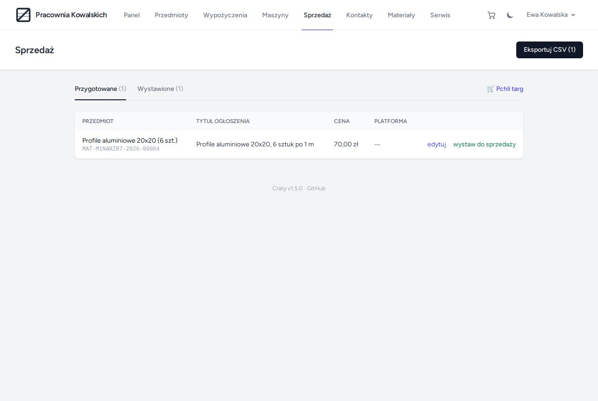

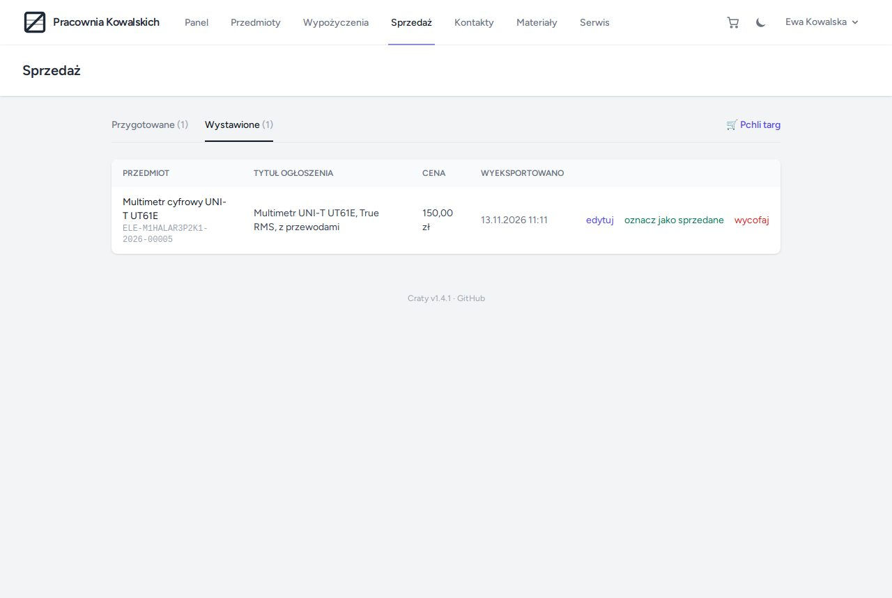
Link do oferty zwykle powstaje dopiero po wystawieniu, więc da się go dopisać później: kliknij wiersz oferty, a w podglądzie na dole jest pole na link.
Pchli targ
Pchli targ to publiczna strona główna Craty (sam adres, bez logowania) z wystawionymi ofertami. Adres możesz wysłać znajomym. Każda oferta ma swoją stronę ze zdjęciami, opisem, linkiem do OLX czy Allegro i kontaktem.

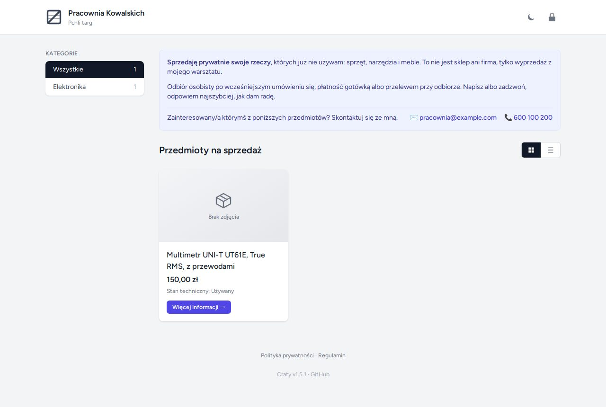

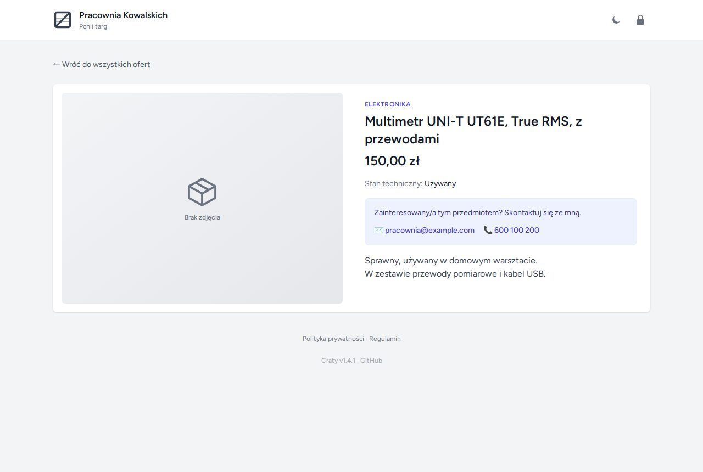
Opis sprzedaży, e-mail i telefon kontaktowy, politykę prywatności i regulamin ustawia administrator w Ustawienia → Opcje sprzedaży. Teksty piszesz prostym Markdownem: pusta linia to nowy akapit, **pogrubienie**, ## nagłówek, - punkt listy, [link](https://…).
Import i eksport
Stronę Ustawienia → Import i eksport widzą administrator i magazynier. Wszystkie pliki są w formacie CSV ze średnikiem jako separatorem, który Excel, LibreOffice i Arkusze Google otwierają od razu z polskimi znakami. Po zmianach zapisz plik znowu jako CSV (w Excelu: Zapisz jako → CSV (rozdzielany średnikami)), bo pliki .xlsx nie są przyjmowane.

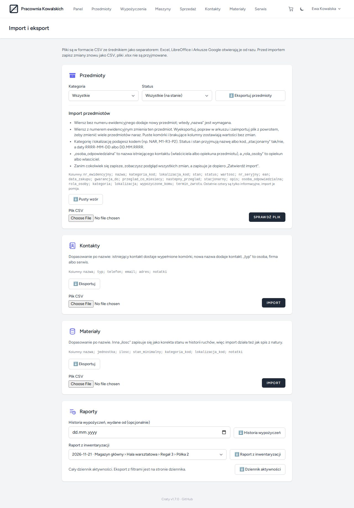
Eksport przedmiotów
Wybierz kategorię i status (domyślnie wszystko, co jest na stanie, albo „Wszystkie, także sprzedane i wycofane”) i kliknij Eksportuj przedmioty. W pliku są wszystkie pola przedmiotu, a na końcu cztery kolumny tylko do wglądu: nazwa kategorii, pełne miejsce, komu jest wypożyczony i do kiedy.
Import i zmiana wielu przedmiotów naraz
- Wiersz bez numeru ewidencyjnego dodaje nowy przedmiot. Wtedy wymagana jest tylko nazwa, a numer i kod QR Craty nadaje sam.
- Wiersz z numerem ewidencyjnym zmienia ten przedmiot. Pusta komórka i kolumna, której w pliku nie ma, zostawiają wartość bez zmian.
- Kategorię i miejsce podajesz kodem, np.
NARalboM1-R3-P2. Status i stan możesz wpisać słowami („w naprawie”, „używany”), „stacjonarny” jako tak albo nie, daty jako 2026-11-25 albo 25.11.2026, kwoty z przecinkiem. - Najpierw zawsze widzisz podgląd: nowe przedmioty, zmiany w postaci „było → będzie”, wiersze bez zmian i błędy. W bazie nic się nie zmienia, dopóki nie klikniesz Zatwierdź import. Wiersze z błędami są pomijane.
- Nieznany kod kategorii albo miejsca przy nowym przedmiocie to tylko ostrzeżenie: przedmiot powstanie bez tego pola. Przy zmianie istniejącego przedmiotu to błąd, żeby literówka nie skasowała przypisania.
- Zmiany z importu trafiają do historii przedmiotu tak samo jak zmiany z formularza. Jeden plik może mieć do 2000 wierszy.
Nowe ceny i projektor do naprawy jednym plikiem
- Ewa eksportuje przedmioty i otwiera plik w Excelu.
- Zmienia wartość drabiny na 650, projektorowi wpisuje status „w naprawie”, a w nowym wierszu na dole dopisuje lutownicę (bez numeru ewidencyjnego). Przy głośniku przez pomyłkę wpisuje kategorię „AUDIO”, której nie ma.
- Zapisuje plik jako CSV i wgrywa go przyciskiem Sprawdź plik.
- Podgląd pokazuje jedną nową pozycję, dwie zmiany i jeden błąd przy głośniku. Ewa zatwierdza import, a głośnik poprawi później.

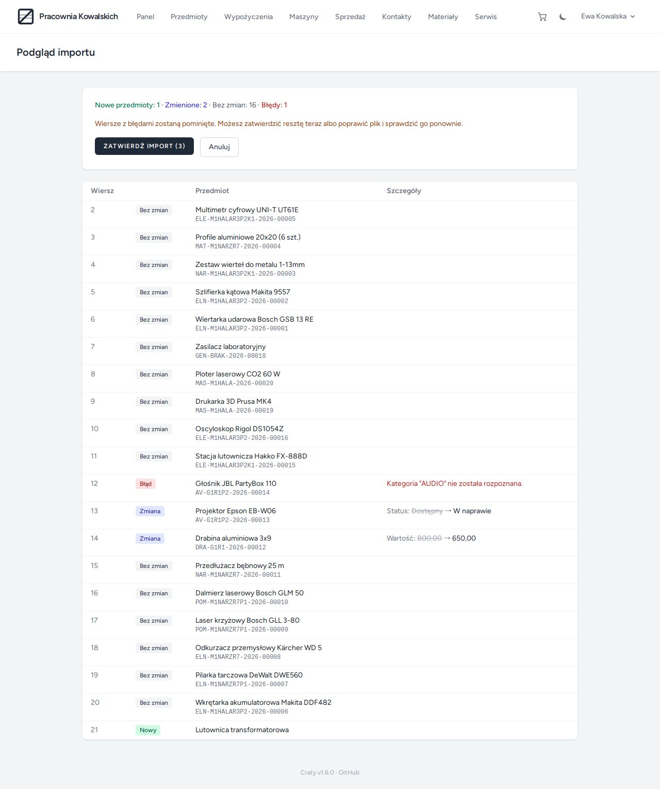
Kontakty i materiały
Gdy te moduły są włączone, na stronie są też ich eksport i import. Rekordy dopasowują się po nazwie (bez względu na wielkość liter): istniejący kontakt albo materiał dostaje wartości z wypełnionych komórek, a nowa nazwa dodaje nowy. Inna ilość materiału zapisuje się jako korekta w historii ruchów, więc import materiałów działa też jak spis z natury. Te importy wchodzą od razu, bez podglądu, a podsumowanie pokazuje, ile dodano, zmieniono i które wiersze miały błędy.
Raporty
- Historia wypożyczeń: wszystkie wypożyczenia, także zwrócone, opcjonalnie od wybranej daty, z terminami, stanem przy wydaniu i zwrocie oraz tym, kto wydał i przyjął.
- Raport z inwentaryzacji: wybrana zakończona inwentaryzacja, jeden wiersz na przedmiot z wynikiem (brakuje, nie na swoim miejscu, na miejscu, wypożyczony albo w naprawie).
- Dziennik aktywności (tylko administrator): cały dziennik. Na stronie dziennika przycisk CSV pobiera tylko wpisy z ustawionymi tam filtrami.
Ustawienia
Ustawienia otwierasz z menu z Twoim imieniem (prawy górny róg). Część podstawowa jest dla wszystkich, zaawansowana tylko dla administratora.

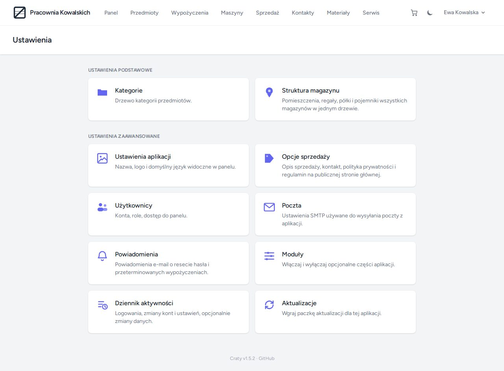
| Ustawienie | Co tam jest |
|---|---|
| Kategorie, Struktura magazynu | Opisane w rozdziale Kategorie i miejsca. |
| Import i eksport | Przedmioty, kontakty i materiały w plikach CSV oraz raporty. Opisane w rozdziale Import i eksport. |
| Ustawienia aplikacji | Nazwa (np. „Pracownia Kowalskich”), logo, ikonka karty przeglądarki, domyślny język (polski lub angielski) i opcja „Użyj logo jako ikony aplikacji na telefonie”. |
| Opcje sprzedaży | Opis, kontakt, polityka prywatności i regulamin pchlego targu. |
| Użytkownicy | Konta, role (Administrator, Magazynier, Użytkownik), wyłączanie kont. Wyłączone konto nie zaloguje się, a zalogowana osoba zostaje wylogowana przy następnym kliknięciu. |
| Poczta | Własny serwer SMTP do wysyłki e-maili, z przyciskiem wiadomości testowej. |
| Powiadomienia | Samodzielny reset hasła, codzienny e-mail o przeterminowanych wypożyczeniach i cotygodniowe przypomnienie serwisowe. |
| Kopie zapasowe | Cała baza i wszystkie pliki w jednym .zip, ręcznie albo automatycznie, z pobieraniem i przywracaniem. Opis niżej. |
| Dziennik aktywności | Kto, co i kiedy zrobił: logowania, zmiany kont i ustawień, aktualizacje, opcjonalnie zmiany danych. Opis niżej. |
| Moduły | Włączanie i wyłączanie Wypożyczeń, Sprzedaży, Kontaktów, Serwisu, Materiałów i Rezerwacji maszyn. |
| Aktualizacje | Aktualizacja przez wgranie paczki .zip z nową wersją (w wersji Docker: pobranie nowego obrazu). |


E-maile z powiadomieniami wysyłają się tylko wtedy, gdy na serwerze działa harmonogram zadań (cron), opisany niżej w części Zadania automatyczne (cron). W wersji Docker działa sam.
Kopie zapasowe
W Ustawienia → Kopie zapasowe (tylko administrator) przycisk Zrób kopię zapasową zapisuje w jednym pliku .zip całą bazę danych i wszystkie wgrane pliki: zdjęcia, załączniki, kody QR i logo. Kopia działa także na hostingach, które nie pozwalają uruchamiać zewnętrznych programów.

- Automatycznie: codziennie albo co tydzień. Wymaga harmonogramu zadań (cron) na hostingu, jak go ustawić, opisuje następna część. W wersji Docker działa samo.
- Przechowywanie: kopie leżą na serwerze w katalogu niedostępnym z internetu i usuwają się po wybranym czasie (7, 14, 30 albo 90 dni, albo bez limitu). Najnowsza zostaje zawsze.
- Pobieranie i wgrywanie wymagają potwierdzenia hasła. Wgrać można kopię z komputera albo z innej instalacji Craty.
- Przywracanie zastępuje wszystkie dane i pliki zawartością kopii. Przed nim Craty sam robi kopię bieżącego stanu (typ „przed przywróceniem”), żeby dało się wrócić. Kopię ze starszej wersji Craty po przywróceniu sam aktualizuje, a kopii z nowszej wersji nie przyjmie. Na koniec trzeba się zalogować kontem z kopii.
W każdej kopii jest plik CZYTAJ-MNIE.txt z instrukcją ręcznego odtworzenia, np. przez import bazy w phpMyAdmin. Przechowuj co jakiś czas jedną kopię także poza serwerem, np. na swoim komputerze.
Zadania automatyczne (cron)
Kilka rzeczy Craty robi sam o stałych porach, ale tylko wtedy, gdy są włączone w Ustawieniach:
| Kiedy | Co | Gdzie się włącza |
|---|---|---|
| codziennie 2:30 | kopia zapasowa (codziennie albo raz w tygodniu) | Ustawienia → Kopie zapasowe, pole „Automatyczna kopia” |
| codziennie 3:30 | usuwanie starych wpisów dziennika aktywności | zawsze, według czasu wybranego na stronie dziennika |
| codziennie 8:00 | e-mail o przeterminowanych wypożyczeniach | Ustawienia → Powiadomienia |
| poniedziałek 8:00 | przypomnienie serwisowe | Ustawienia → Powiadomienia (moduł Serwis) |
Żeby to działało na własnym hostingu, serwer musi co jakiś czas uruchamiać Craty. Służy do tego harmonogram zadań (cron), który ustawiasz w panelu hostingu, zwykle w zakładce „Cron”, „Zadania cykliczne” albo „Harmonogram zadań”. Dodaj jedno zadanie uruchamiane co minutę:
* * * * * cd /ścieżka/do/craty && php artisan schedule:run >> /dev/null 2>&1- /ścieżka/do/craty to katalog na serwerze, w którym leżą pliki
index.phpiartisan, czyli ten sam, do którego wgrałeś Craty. Panel hostingu zwykle pokazuje pełną ścieżkę w menedżerze plików, np./home/uzytkownik/domains/twojadomena.pl/public_html. - php: na części hostingów trzeba podać pełną ścieżkę do PHP w wersji 8.3 lub nowszej, np.
/usr/local/bin/php83albo/opt/alt/php83/usr/bin/php. Właściwą hosting zwykle podpowiada przy dodawaniu zadania albo w swojej pomocy. - Jedno zadanie wystarczy na wszystko z tabeli. Craty sam sprawdza, co jest włączone i czy przyszła na to pora.
Jeśli hosting nie pozwala uruchamiać zadań co minutę, ustaw co 5 albo co 15 minut: wszystkie pory z tabeli wypadają na pełne 5 i 15 minut, więc nic nie przepadnie. Gdy da się tylko raz na godzinę, kopię zapasową dodaj jako osobne zadanie o 2:30:
30 2 * * * cd /ścieżka/do/craty && php artisan backup:run --autoTa komenda sama sprawdza, czy automatyczna kopia jest włączona i czy przyszła na nią pora, więc przy ustawieniu „co tydzień” zrobi kopię raz w tygodniu.
Jak sprawdzić, czy cron działa: włącz automatyczną kopię i następnego dnia zajrzyj do Ustawienia → Kopie zapasowe. Na liście powinna być kopia typu „automatyczna”. W wersji Docker nic nie trzeba ustawiać, harmonogram działa w kontenerze sam.
Aktualizacja

- Pobierz paczkę
craty-X.Y.Z.zipz wydań na GitHubie. - Zrób kopię zapasową w Ustawienia → Kopie zapasowe (link jest też na stronie Aktualizacje).
- W Ustawienia → Aktualizacje potwierdź hasło, wybierz paczkę i opcjonalnie wklej sumę kontrolną SHA-256 z opisu wydania.
- Po wgraniu Craty sam wprowadza zmiany w bazie i pokazuje nową wersję w stopce.
Dziennik aktywności
Administrator widzi w Ustawienia → Dziennik aktywności, kto, co i kiedy zrobił, z adresem IP. Zawsze zapisują się:
- logowania i wylogowania, także nieudane logowania (z wpisanym e-mailem) i blokady po zbyt wielu próbach,
- zakładanie, zmiany i usuwanie kont, np. zmiana roli albo wyłączenie konta,
- zmiany ustawień i modułów, z wartością przed i po zmianie,
- wgrane i nieudane aktualizacje.
Po zaznaczeniu Zapisuj też zmiany danych dochodzi dodawanie, zmiany i usuwanie przedmiotów, kategorii, miejsc, kontaktów, wypożyczeń i innych danych. Hasła nigdy nie trafiają do dziennika, zapisuje się tylko informacja, że je zmieniono. Stare wpisy usuwają się same po czasie wybranym w polu Przechowuj wpisy przez: domyślnie rok, do wyboru od 30 dni do 2 lat albo bez limitu.

Ktoś próbuje zgadnąć hasło
- Ewa widzi na liście kilka czerwonych wpisów „Nieudane logowanie” z tym samym e-mailem i adresem IP.
- Wybiera w filtrze „bezpieczeństwo i administracja” i wpisuje adres IP w wyszukiwarkę, żeby zobaczyć wszystkie próby z tego adresu.
- Jeśli to nie pomyłka kogoś z zespołu, zmienia hasło tego konta w Ustawienia → Użytkownicy, a po pięciu nieudanych próbach Craty i tak sam blokuje logowanie na chwilę.
Twój profil
W Profil każdy zmienia swoje imię, e-mail, hasło i język. Jasny albo ciemny motyw przełącza ikona księżyca w górnym pasku; wybór zapamiętuje przeglądarka.
Częste pytania
Nie widzę przedmiotu na liście.
Sprawdź, czy nad listą nie ma żółtego paska z włączonymi filtrami (Wyczyść filtry). Sprzedane i wycofane przedmioty są widoczne tylko po wybraniu tego statusu w filtrze.
Nie mogę wypożyczyć przedmiotu.
Przedmiot w naprawie, już wypożyczony, sprzedany albo wycofany nie może wyjść. Komunikat w ramce Wypożyczenie mówi dlaczego.
Telefon nie chce włączyć aparatu.
Aparat działa tylko na stronie z HTTPS i po zgodzie w przeglądarce. Jeśli wcześniej odmówiłeś, zmień uprawnienie aparatu dla tej strony w ustawieniach przeglądarki.
Zmieniłem kategorię, a numer ewidencyjny został stary.
Numer nie zmienia się sam, żeby nie unieważniać przyklejonych naklejek. Na karcie przedmiotu przy kodzie QR jest przycisk odświeżenia numeru. Po nim wydrukuj nową etykietę.
Nie przychodzą e-maile z powiadomieniami.
Sprawdź, czy powiadomienie jest włączone w Ustawienia → Powiadomienia, czy w Ustawienia → Poczta działa wiadomość testowa i czy na hostingu jest ustawiony cron (patrz Zadania automatyczne). E-mail przychodzi tylko wtedy, gdy jest coś do zgłoszenia.
Jak zmienić coś w wielu przedmiotach naraz?
Wyeksportuj przedmioty w Ustawienia → Import i eksport, popraw kolumny w arkuszu i wgraj plik z powrotem. Podgląd pokaże każdą zmianę, zanim ją zatwierdzisz.
Czy usunięcie kontaktu albo modułu skasuje dane?
Nie. Wypożyczenia usuniętego kontaktu zostają pod tą samą nazwą, a wyłączony moduł tylko się chowa i po ponownym włączeniu wszystko jest na miejscu.